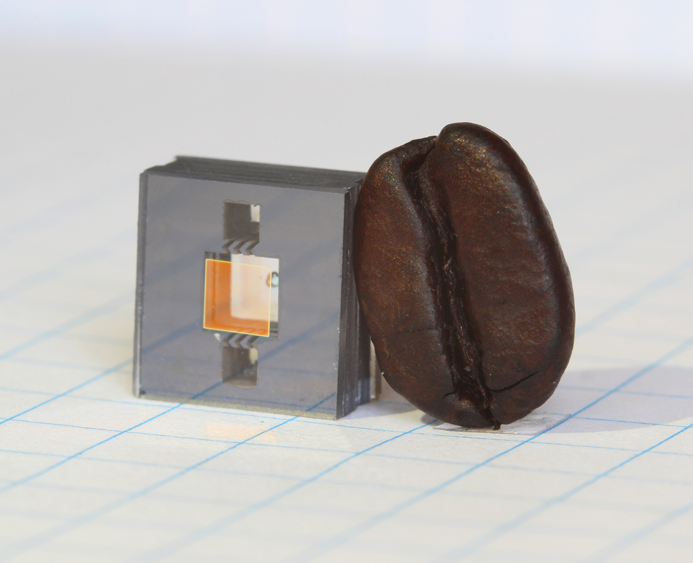

Atomic-device research · Category referenceHummon/NIST ↗
CATEGORY REFERENCE / MODEL PHOTO PENDINGOAQ Technologies / Quantum Sensor
Product information pendingQuantum Sensor product 02
Product name and introduction will appear here.
A temporary product slot for layout review. This does not indicate a listed product or confirmed distribution arrangement.
Specifications
Key specifications
- Manufacturer
- —
- Model
- —
- Measurement field
- —
- Measurement range
- —
- Sensitivity
- —
- Bandwidth
- —
- Size / Weight
- —
- Power / Interface
- —
Downloads
Product documentation
Datasheet
File to be added
Dimensional drawing
File to be added
User guide
File to be added
Request a Quote
Tell us about your product requirements.
Tell us the application, quantity, and requested schedule.
Inquiries are not sent from this review prototype.